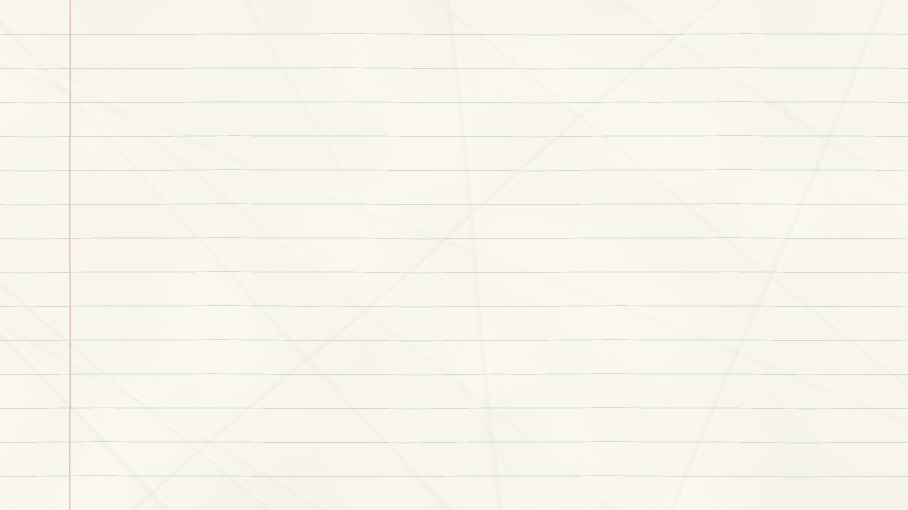

Run of show and review notes
The UNC work request and closing paragraphs reuse existing holds; they have no dedicated action clips. In the pasted draft, “wheelbarrow” and flat “Tetris blocks” also need to match the selected mine cart and 3D cubes, and the context-window definition still has a placeholder.